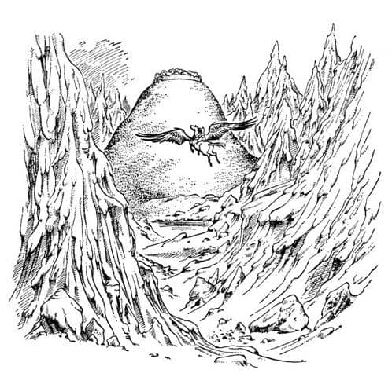
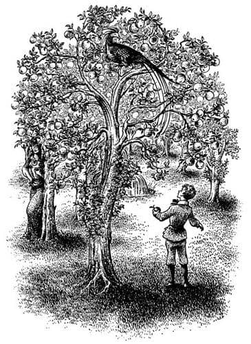

Beklenmedik Bir Karşılaşma
“Uyan Digory, uyan Kızılkanat” diye sesi geliyordu Polly’nin. “Karamela ağacı büyümüş! Harika bir sabah bu!”
Güneşin ilk ışıkları ağaçların arasından süzülmekteydi. Çimler, çiyle gri renge bürünmüştü. Örümcek ağları gümüş gibiydi. Yanı başlarında, bir elma ağacı büyüklüğünde, küçük, koyu renkli bir ağaç vardı. Yaprakları gözlükotu denilen baharata benzer beyazımsı ve kâğıt gibiydi. Sanki hurmaya benzeyen küçük, kahverengi meyvelerle doluydu.
“Yaşasın! dedi Digory. “Fakat ben önce biraz yüzeceğim.” Çiçeklerle bezeli çalıların arasından nehrin kenarına koştu. Hiç, üstünde güneşin parladığı mavi ve sarı renkli taşlarla dolu bir dağ nehrinde yıkandınız mı? Deniz kadar güzeldir; hatta bazen daha da iyidir. Kuşkusuz Digory kurulanmadan giyinmek zorunda kaldı, ama buna değdi doğrusu. O döndükten sonra Polly de nehre giderek yüzdü; en azından öyle yaptığını söyledi ama biz biliyoruz ki o pek iyi yüzme bilmez ve belki de en iyisi fazla soru sormamaktır. Kızılkanat da nehri ziyaret etti ama yalnızca kana kana su içmek için. Nehrin ortasında başını suya uzatmış ve yelesini sallayıp defalarca kişnemişti.
Polly ve Digory karamela ağacında işe giriştiler! Meyveler çok nefisti; gerçek karamela gibi değildi – daha yumuşak ve suluydu – ama karamelayı andıran bir meyveydi. Kızılkanat da bir güzel kahvaltı etti. Karamela meyvelerinden birini denemiş ve hoşuna gitmişti fakat sabahın bu saatinde otu tercih edeceğini söylemişti. Kahvaltıdan sonra çocuklar biraz zorlukla atın sırtına bindiler ve ikinci yolculuk başladı. Yolculuk dünkünden daha iyi başlamıştı, çünkü hem kendilerini yeniden doğmuş gibi hissediyorlardı, hem de güneş arkalarındaydı. Kuşkusuz ışık arkadan gelince her şey daha güzel görünüyordu. Harika bir yolculuktu. Etraflarından büyük karlı dağlar yükseliyordu. Aşağıdaki vadiler öyle yeşil, ve buzullardan inip nehre karışan dereler öyle maviydi ki sanki dev mücevher parçalarının üzerinden uçuyorlarmış gibiydi. Yaşadıkları maceranın bu anının hiç bitmemesini istiyorlardı. Fakat biraz sonra üçü birden havadaki kokuyu hissedip “Bu da ne?”, “Kokuyu alıyor musun?”, “Nereden geliyor acaba?” demeye başladılar. Ötelerde bir yerden, sanki dünyanın en nefis meyve ve çiçeklerinden geliyormuş gibi yumuşak ve harika bir koku geliyordu.

“Koku, gölün bulunduğu şu vadiden geliyor” dedi Kızılkanat.
“Doğru” dedi Digory. “Suyu ne kadar da mavi. Bak! Gölün öbür yakasında yeşil bir tepe var.”
“Aradığımız yer burası olmalı” dediler.
Kızılkanat büyük daireler çizerek alçaldı. Buzlu tepeler, üzerlerinde yükseldikçe yükseldi. Hava her geçen an ılıdı ve tatlılaştı, öylesine tatlılaştı ki neredeyse gözlerini yaşartacaktı. Kızılkanat artık büyük kanatları iki yana hareketsizce açılmış olarak süzülüyordu ve ayakları yere dokunmak üzere hazırdı. Dik, yeşil tepe hızla onlara doğru yaklaşıyordu. Az sonra biraz sakarca tepenin eteğine kondu. Çocuklar yuvarlanarak, kendilerini incitmeksizin serin ve yumuşak otların üzerine düştüler ve nefes nefese ayağa kalktılar.
Tepenin yamacındaydılar ve hemen tepeye doğru yola koyuldular (Kızılkanat’ın, kendini dengeleyecek kanatları olmaksızın ve arada sırada kanatlarını çırpmaksızın bunu başarabileceğini sanmıyorum). Tepenin üstü çepeçevre yüksek bir yeşillik duvarıyla çevriliydi. Duvarın içinde büyük ağaçlar vardı. Dalları duvardan dışarı sarkıyordu ve yaprakları rüzgâr estiği zaman yalnızca yeşil değil, mavi ve gümüşi bir renkte görünmekteydi. Gezginler tepeye ulaştıklarında, kapıyı bulmadan önce neredeyse yeşil duvarın tüm etrafını çepeçevre yürüdüler. Doğuya bakan çift kanatlı büyük, altın kapı sımsıkı kapalıydı.
Bu ana kadar Kızılkanat ve Polly sanırım Digory ile birlikte içeriye gireceklerini umuyorlardı. Fakat artık böyle düşünmüyorlardı. Doğrusu, bu kadar kendine özgü bir yer görmemişsinizdir. İlk bakışta başka birine ait olduğunu hissediyordunuz. Özel bir iş için gönderilmediyse, yalnızca bir aptal içeriye girmeyi hayal ederdi. Digory diğerlerinin kendisiyle gelmeyeceklerini, gelemeyeceklerini hemen anlamıştı. Yalnız başına kapıya yaklaştı.
Kapıya iyice yaklaştığında, altın zemin üzerine gümüş harflerle yazılmış sözcükler gördü; şöyle bir şeydi:
Altın kapılardan içeri gir, ya da girme
Al meyvemi diğerleri için ya da sakın
Çünkü çalanlar ya da duvara tırmananlar
Gönüllerinin arzusunu ve kederi bulacaklar.
“Al meyvemi diğerleri için” dedi kendi kendine. “Benim yapacağım şey de bu. Sanırım, kendim yememeliyim anlamına geliyor. Son dizedeki uyarının ne olduğunu bilmiyorum. Altın kapılardan içeri gir. Kapıdan girebilirse kim duvara tırmanmak ister ki? Ama kapı nasıl açılıyor?” Eliyle dokunur dokunmaz kapı içeriye doğru, sonuna kadar ve menteşelerinden en ufak bir ses çıkarmadan açıldı.
Şimdi içerisini görüyordu ve orası dış bölümden daha da özel bir yer gibiydi. İçerisi çok sessizdi. Bahçenin ortasındaki havuzun sesi bile zor işitiliyordu. O güzel koku her tarafı kaplamıştı: Huzur verici fakat ağırbaşlı bir yerdi. Aradığı ağacın hangisi olduğunu hemen görmüştü, çünkü hem bahçenin tam ortasındaydı, hem de dallarında büyük gümüş elmalar parıldamakta ve güneşin erişemediği gölgelik yerlerde kendilerine has bir ışık yansıtmaktaydı. Dosdoğru ağaca yürüdü, bir elma kopardı ve Norfolk ceketinin üst cebine koydu. Fakat cebine koymadan önce bakıp koklamadan da edemedi.

Keşke öyle yapmasaydı. Üzerine korkunç bir açlık ve susuzluk çöktü. O meyvenin tadına bakma isteği bütün benliğini sardı. Aceleyle elmayı cebine koydu fakat daha sürüyle elma vardı. Birinin tadına bakmak fena mı olurdu? Kapıdaki uyarı kesinlikle bir emir değil, sadece bir nasihatten ibaretti. Nasihati kim dinlerdi ki? Ya da bir emir olsa bile, bir elma yemekle emre karşı gelmiş mi olacaktı? Şimdiden “diğerleri için” bir elma almakla emirlere uymuştu.
Bütün bunları düşünürken bilinçsizce dalların arasından ağacın tepesine doğru baktı. Orada başının üstündeki bir dala harika bir kuş tünemişti. “Tünemişti” diyorum çünkü, tam anlamıyla olmasa da, hemen hemen uyuyor gibi görünüyordu. Bir gözü aralıktı. Bir kartaldan daha büyük bir kuştu, göğsü safran rengi, başı kırmızı sorguçlu ve kuyruğu mordu.
“Ve bunun gösterdiği yalnızca şuydu ki” diyecekti Digory sonraları hikâyesini başkalarına anlatırken, “bu büyülü yerlerde ne kadar dikkatli olsan azdır. Seni kimin gözetlediğini asla bilemezsin.” Fakat bence Digory zaten kendisi için bir elma koparmazdı. O günlerde “Sakın çalma” gibi nasihatler çocukların kafasına bugünkünden daha iyi sokuluyordu. Yine de asla emin olamayız.
Digory kapıya yönelmek üzereyken etrafa son bir kez göz atmak üzere döndü. O da ne! Yalnız değildi! Cadı orada, birkaç metre ilerisinde ayakta duruyordu. Yediği bir elmanın eşeleğini atmak üzereydi. Elmanın suyu umduğunuzdan daha koyu renkliydi ve Cadı’nın ağzı etrafında iğrenç bir leke bırakmıştı. Digory o an, Cadı’nın duvardan tırmanarak içeri girdiğini anladı. Ve son mısradaki, gönlünün arzusuyla birlikte kederin de bulunacağının ne anlama geldiğini düşünmeye başladı. Çünkü Cadı her zamankinden daha güçlü ve kibirli ve hatta bir bakıma daha da muzafferane görünmekteydi, ancak yüzü tuz kadar beyaz; ölümcül bir beyazlıktaydı. Bütün bunlar Digory’nin aklından bir saniyede geldi geçti, sonra tabana kuvvet kapıya doğru koşarken, Cadı da arkasındaydı. Dışarı çıkar çıkmaz kapı kendiliğinden kapandı. Bu ona biraz zaman kazandırmıştı fakat fazla değil. Diğerlerine ulaşıp “Çabuk, kalk Polly, kalk Kızılkanat” diye bağırırken Cadı duvara tırmanmış ya da üzerinden atlamıştı ve arkasında, çok yakınındaydı.
“Olduğun yerde kal!” diye bağırdı Digory, Cadı’yla yüz yüze gelmek için dönerek, “yoksa biz uçup kayboluruz. Bir santim bile yaklaşma.”
“Aptal çocuk” dedi Cadı. “Neden benden kaçıyorsun? Şimdi durup beni dinlemezsen tüm yaşamın boyunca seni mutlu edecek bilgilerden yoksun kalacaksın.”
“Duymak istemiyorum, teşekkürler” dedi Digory. Fakat duymak istiyordu.
“Ne yapmaya geldiğinizi biliyorum” diye devam etti Cadı. “Çünkü dün gece ormanda yanınıza yaklaşan bendim ve bütün konuşmalarınızı duydum. Sen bu bahçeden meyve kopardın. Şu anda meyve senin cebinde. Ve sen onu tadına bakmadan Aslan’a geri götüreceksin; onun yemesi için, onun kullanması için. Seni aptal! O meyvenin ne olduğunu biliyor musun? Sana söyleyeyim. Gençlik elması, yaşam elması o. Ben biliyorum, çünkü ben tadına baktım ve şimdiden kendimde öyle değişiklikler hissediyorum ki hiç yaşlanmayacağım ve ölmeyeceğim. Ye onu oğlum ye; sen ve ben sonsuza kadar yaşayıp tüm bu dünyanın – ya da geri dönmeye karar verirsek senin dünyanın – kral ve kraliçesi oluruz.”
“Hayır teşekkürler” dedi Digory, “tanıdığım herkesin ölümünden sonra sonsuza kadar yaşamaktan hoşlanıp hoşlanmayacağımı pek bilmiyorum. Sıradan biri gibi yaşayıp, ölüp, cennete gitmeyi tercih ederim.”
“Ama çok sevdiğini söylediğin annenden ne haber?”
“Onun bununla ne ilgisi var?” dedi Digory.
“Elmadan bir lokmanın onu iyileştireceğini görmüyor musun aptal? Elma cebinde. Burada biz bizeyiz ve Aslan uzakta. Büyünü kullan ve kendi dünyana geri dön. Bir dakikada annenin yatağının dibinde olabilir, meyveyi ona verebilirsin. Beş dakika sonra annenin yüzüne renk geldiğini göreceksin. Sana ağrısının kalmadığını söyleyecek. Sonra kendini daha güçlü hissettiğini söyleyecek. Sonra da uykuya dalacak – düşün, ağrısız, ilaçsız, doğal ve tatlı bir uyku. Ertesi gün herkes nasıl hayret verici bir şekilde iyileştiğini konuşacak. Çok yakında tamamen iyileşecek. Her şey daha iyi olacak. Eviniz yeniden mutlulukla dolacak. Sen de diğer çocuklar gibi olacaksın.”
“Of!” diye soludu Digory sanki incinmiş gibi ve elini başına koydu. Çünkü şimdi korkunç bir seçimin eşiğinde olduğunu biliyordu.
“Aslan senin için ne yaptı ki onun kölesi olasın?” dedi Cadı. “Sen kendi dünyana döndüğünde sana ne yapabilir ki? Ve annen, onun ağrısını kesebileceğin ve yaşamasını sağlayabileceğin ve babanın kalbinin kırılmasını önleyebileceğin halde, yapmadığını – hiç işin olmayan yabancı bir dünyada vahşi bir hayvanın işlerini yapmayı tercih ettiğini bilseydi ne düşünürdü?”
“Ben – Ben onun vahşi bir hayvan olduğunu sanmıyorum” dedi Digory kuru bir sesle. “O – bilmem ki—”
“O zaman daha da kötü ya” dedi Cadı. “Bak sana şimdiden ne yaptı; bak seni ne kadar kalpsiz yaptı. Onu dinleyen herkese yaptığı budur. Zalim, insafsız çocuk! Annenin ölmesine izin vereceksen eğer—”
“Of! Kapa çeneni” dedi mutsuz Digory yine aynı sesle. “Görmediğimi mi sanıyorsun? Fakat ben – ben söz verdim.”
“İyi ama neye söz verdiğini bilmiyorsun. Ve buradaki hiç kimse seni engelleyemez.”
“Annem” dedi Digory sözcükleri zorlukla mırıldanarak, “bundan hoşlanmazdı – sözünü tutmak konusunda çok katıdır – ve de hırsızlık – ve bu türden şeyler. Eğer burada olsaydı – hemen – bana bunu yapmamamı söylerdi.”
“Fakat bilmesine gerek yok ki” dedi Cadı, böylesine vahşi bir yüze sahip birinden umulmayacak kadar tatlı bir sesle. “Elmayı nasıl bulduğunu söylemezsin. Babanın bilmesine de gerek yok. Senin dünyandaki hiç kimsenin bu hikâyeyi bilmesine gerek yok. Biliyorsun ki küçük kızı geri götürmek zorunda değilsin.”
Cadı burada büyük gaf yapmıştı. Digory kendisi gibi, Polly’nin de kendi yüzüğüyle kolayca gidebileceğini elbette biliyordu. Fakat görünen o ki Cadı bunu bilmiyordu. Ve Polly’yi geride bırakma fikrinin iğrençliği karşısında, Cadı’nın söylediği tüm diğer şeylerin yanlış ve boş olduğu beyninde şimşek gibi çaktı. Tüm mutsuzluğuna karşın, aklı başına gelerek (değişik ve yüksek bir sesle) dedi ki:
“Bana bak; sen tüm bunlara niye karışıyorsun? Neden aniden annemden bu kadar çok hoşlanmaya başladın? Seninle ne ilgisi var? Çıkarın ne?”
“Aferin, Digs” diye fısıldadı Polly kulağına. “Çabuk! Uzaklaşalım şimdi.” Tartışma boyunca tek bir söz söylemeye cesaret edememişti çünkü biliyorsunuz ki, ölmekte olan Polly’nin annesi değildi.
“Bin o zaman” dedi Digory, Polly’nin atın sırtına binmesine yardım ederek ve kendisi de olabildiğince hızlı davranarak. At kanatlarını açtı.
“Gidin öyleyse, aptallar” diye bağırdı Cadı. “Yaşlı, zayıf ve ölüm döşeğindeyken beni düşün çocuk. Sonsuz gençlik olanağını nasıl reddettiğini hatırla! Sana kimse bunu yeniden teklif etmeyecek.”
O kadar yükselmişlerdi ki Cadı’yı güçlükle duyuyorlardı. Cadı da onlara bakmakla vakit kaybetmedi. Onu tepeden aşağı, kuzeye doğru yürürken gördüler.
Bahçede olanlar fazla zaman almamıştı ve o sabah erken yola çıkmışlardı. Bu nedenle Kızılkanat ve Polly karanlık çökmeden kolaylıkla Narnia’ya varabileceklerini söylüyorlardı. Geriye dönüşte Digory hiç ağzını açmamış, diğerleri de onunla konuşmaktan çekinmişlerdi. Çok üzgündü ve doğru şeyi yapıp yapmadığından tam olarak emin değildi, ama Aslan’ın gözlerindeki parıldayan yaşları hatırlayınca içi rahatlıyordu.
Kızılkanat bütün gün yorulmaz kanatlarıyla nehri izleyerek doğuya doğru, dağların arasından, vahşi ormanların bulunduğu tepelerin üzerinden ve sonra büyük şelalenin üzerinden aşağıya, görkemli kayalıkların gölgesiyle kararmış Narnia ormanlarının bulunduğu aşağıya doğru, daha sonra da arkalarındaki günbatımıyla gökyüzü kızarmaya başladığı zaman, nehrin yanında bir araya toplanmış bir sürü yaratığı görene dek uçtu. Biraz sonra onların ortasında Aslan’ı görebiliyordu. Kızılkanat aşağı süzüldü, ayaklarını açtı, kanatlarını kapattı ve yere inip eşkin giderek durdu. Çocuklar attan indiler. Digory, bütün hayvanların, cücelerin, satirlerin, su perilerinin ve diğerlerinin, ona yol açmak için sağa sola çekildiklerini gördü. Aslan’a yaklaştı, elmayı verdi ve:
“İstediğiniz elmayı getirdim efendim” dedi.